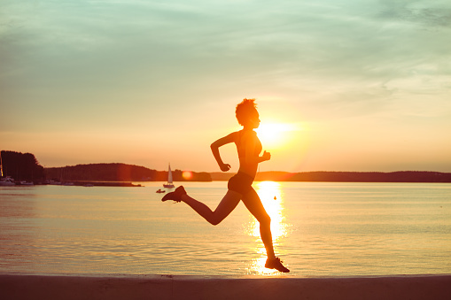

Exercícios calistênicos podem ser bastante inclusivos, permitindo que qualquer pessoa — independente de peso, condição física e idade
Calistenia é um conjunto de exercícios físicos nos quais se usa apenas o peso do próprio corpo. Procura movimentar grupos musculares de maneira natural, sem utilização de halteres e similares.
Os exercicios podem aumentar a flexibilidade e a mobilidade articular, Melhorar equilíbrio corporal, Desenvolver coordenação motora e muito mais
Os exercício calistênicos contam com diferentes níveis de dificuldade que podem se adequar a quem esta praticando
cientistas da unidade de pesquisa de Ciências do Esporte e Exercício da Universidade de Palermo, Itália, fizeram uma pesquisa que apontou que o treinamento de calistenia melhora a postura, força e composição corporal.